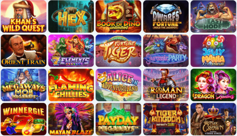
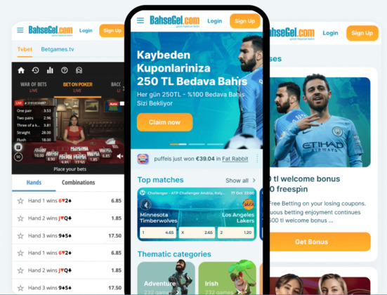
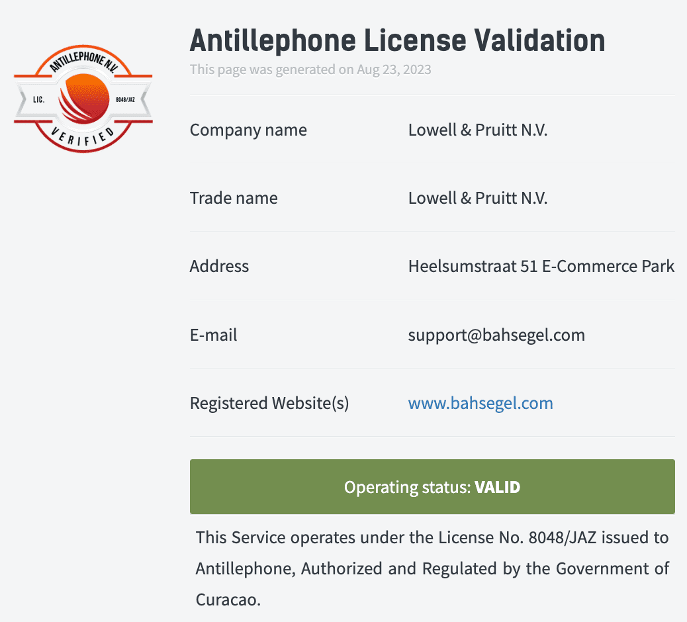

Güvenilir sanal bahis hizmetleri denildiği takdirde akla ilk olarak gelen
bahis sitelerinden biri olan Bahsegel, 2013 yılından bu yana sadece Türkiye
özelinde aktif sanal bahis hizmetleri sunar. Dünya genelinde ise bahis
hizmet geçmişi çok daha eskiye dayanır ve böylelikle global anlamda sanal
bahis alanında tanınan bir firma olduğunu söylemek doğru olur.
Pragmatic Play, Netent, Playson, Spinomenal, Quickspin, 1X2,
Red Tiger, YGGDRASIL
Para Transferi Kanal Sayısı
10’dan Fazla (Para Yatırma ve Çekme)
Bonus Çevrim Oranları
Casino’da 40 Katı, Spor’da 10 Katı (Bonusa Göre
Farklılaşabilir)
Bahsegel Bonusları
Bahsegel, bonuslarını yüksek miktarlarda ve cazip oranlarda sunarak
oyuncularına avantaj sağlar. Bonusların birçok türleri vardır ve yatırım
bonusu, kayıp bonusu, üyelik bonusu gibi birçok tür yatırımcıların
karşılarına çıkar. Bonuslar genellikle belirli şartları içerir ve
oyuncuların bu şartları yerine getirmesi gerekmektedir.
Bonuslar, oyunculara ek kazanç sağlamak ve oyun deneyimini daha eğlenceli
hale getirmek için sunulan fırsatlardır. Her birinin farklı anlam içerdiği
bu bonus türleri, yakından tanınması durumunda yatırımcılar açısından çok
daha kullanışlı bir hal alacaktır.
Üyelik Bonusları
Yatırımcıların Bahsegel’e sadece üye olmaları nedeniyle elde
ettikleri avantajlar olarak tanımlanabilirler. Üye olmanız,
tabloda yer alan bonusları almanız adına yeterlidir.
Bahsegel sisteminde ilk defa hesap açıyorsanız, %100 oranında 6.000
TL’ye kadar bonus kazanabilirsiniz. Ekstra olarak da 500 TL bedava bahis ve
freespinler de kazanabilirsiniz.
VIP Club üyelik sistemi sayesinde, gerek yatırımları gerekse sitede
geçirdiği süre yani, devamlılığı yüksek olan yatırımcılar, VIP Club
sistemine davet edilirler. Böylelikle VIP üyelik hizmeti ve bonus fırsatları
sizi karşılar.
Üye olurken sisteme tanımladığınız doğum günü tarihiniz geldiğinde,
Bahsegel tarafından size özel sürpriz hediyeler tanımlanır.
Özel Bonuslar
Netent, Fugaso ve diğer birçok oyun sağlayıcısının
yatırımcılara özgü Bahsegel ile birlikte düzenledikleri
bonus etkinlikleridir. Genel manada havuz ödülleri özelinde
dağıtım yapılır ancak bonusa göre farklı şekillerde de ödül
dağıtımları olabilir.
Netent’in XXXTreme oyunlarında %30 oranında para yatırma bonusundan
yararlanabilirsiniz.
Wazdan Mystery Drop etkinliğinden toplamda 1.250.000 Euro ödül
havuzundan sıralamanıza göre bonuslar kazanabilirsiniz.
500.000 Euro ödül havuzlu Fugaso, Book of Billionaire etkinliği ile
her hafta ödül kazanan 750 oyuncudan biri olabilirsiniz.
Haftalık Bonuslar
Sadece haftanın belirli günleri ya da hafta toplamına göre
hesap edilen bonuslar olarak bilinirler.
Casino kategorisine özgü haftasonu 1.000 TL bonusu ile her hafta,
hafta sonu yapacağınız yatırım işlemlerinde %50 oranında 1.000 TL’ye kadar
bonus kazanabilirsiniz.
Kayıp Bonusları
Yapılan yatırımlar neticesinde oluşan kayıp durumlarının
belirli oranda telafi edilmesini sağlayan bonuslardır.
Çevrim şartları son derece düşüktür ve aynı zamanda bu
telafi bonusundan yararlanmak adına mutlaka belirli bir
oranda yatırım yapmak gerekir.
Casino kategorisinde yapmış olduğunuz yatırımlar neticesinde elde
edilen kayıp durumlarına karşın her gün %10 oranında, 1.500 TL’ye kadar
bonus elde edebilirsiniz.
Spor kategorisinde günlük olarak yaşanan kayıp durumlarına karşın
günlük 250 TL’ye kadar bedava bahis kazanma fırsatından yararlanabilirsiniz.
Yatırım Bonusları
Para yatırma işlemleriniz sonucunda kazanabileceğiniz
bonuslardır. Para yatırma kanalı, tutarı veya günü gibi
birçok detay doğrultusunda bonus tutarı ve özellikleri
farklılık gösterebilir.
Yapacağınız her para yatırma işleminde 100 freespin kazabilirsiniz.
Freespinler direkt olarak otomatik hesabınıza tanımlanacaktır.
Casino ve spor kategorilerinde yapılan her para yatırma işlemine
özel üst limit olmaksızın %15 oranında bonus kazanabilirsiniz.
İlk defa kripto para ile yatırım yaparsanız, %200 oranında para
yatırma bonusu kazanırsınız. Aynı zamanda sonraki her yatırımda da %30
oranında bonus kazanma fırsatını elde edebilirsiniz.
Bahsegel Giriş
Bahsegel hesabınıza giriş yapabilmeniz adına ilk olarak bir Bahsegel
hesabına sahip olmanız gerekir. Eğer onaylanmış bir hesabınız yoksa girişten
ziyade hesabınıza erişim konusunda da problemler yaşayabilirsiniz. Bu
nedenle öncelikle üyelik oluşturmalı ve sonrasında üyeliğinizi doğrulayarak,
hesabınıza giriş yapmalısınız.
Üyelik ve onay işlemlerinin ardından aşağıdaki adımların takip edilmesi
sonucunda hesaba kolaylıkla giriş yapılabilir:
Bahsegel giriş adresini başta sitemiz olmak üzere, sonrasında diğer
birçok kaynaktan temin ediniz.
Ardından siteye erişim sağladıktan sonra “Giriş Yap” butonuna
tıklayınız.
Açılan pencerede ise kullanıcı adı ve şifre bilgilerinizi girerek
ilerlemeniz durumunda siteye kolaylıkla erişim sağlamanız mümkün olacaktır.
Bunun yanı sıra mobil uygulama ve mobil tarayıcı girişlerinde de aynı
adımları takip edebilirsiniz. Mobil uygulama ile giriş yaparken “Beni
Hatırla” seçeneğini kullanırsanız, uygulama sizi her giriş yaptığınız anda
tanıyacaktır. Böylelikle tekrar kullanıcı adı ve şifre bilgilerinizi
girmenize gerek kalmayacaktır.
Bahsegel Yeni Adresi
Bahsegel’in yeni adresini temin etmek, özellikle kapanan bir giriş adresinin
hemen ardından büyük önem taşır. Yatırımlarınızın kesintisiz ve sürekli
olarak devam edebilmesi adına mutlaka yeni adres hakkında bilgi sahibi
olmanız gerekir. Yeni adresi ise temin edebileceğiniz birçok kaynak vardır
ve bu kaynakları kullanarak, kolaylıkla Bahsegel’e erişim sağlayabilirsiniz.
Temel manada yeni adres kaynakları ise aşağıdakiler gibidir:
Sitemiz:Eğer sitemizi favorilerinize eklerseniz, yeni
giriş adresi konusunda anlık olarak tarafımızdan destek alabilirsiniz. Sahip
olduğunuz bir giriş adresi kapanırsa, anında yeni ve diğer giriş adresi
konusunda tarafınıza bildirim yapılacaktır.
SMS ve E-posta:Telefon numaranız veya e-posta
bilgileriniz Bahsegel bünyesinde doğru bir şekilde yer alıyorsa, yeni bir
adres doğrudan tarafınıza iletilir.
Sosyal Medya: Bahsegel’in; Instagram, Twitter, Facebook
vb. sosyal medya hesaplarını takip etmeniz durumunda her an yeni adreslere
ulaşabilirsiniz.
Telegram ya da Whatsapp Duyuru Kanalları:Bahsegel
yatırımcılarına başta giriş adresi, sonrasında diğer birçok konuda duyuru
yapmak adına Telegram ve Whatsapp kanallarını kullanır. Bu kanallara katılım
sağlamanız durumunda anlık olarak güncel ve yeni adresler size ulaşır.
Bahsegel Kayıt
Bahsegel’e kayıt işlemleri genel manada 6 adımda sonuçlanan işlemlerdir.
Yatırımcıları bu 6 adım sonrasında direkt olarak üyelik işlemlerini
tamamlayıp, konu hakkında sonuç alırlar ve yatırım yapmaya başlayabilirler.
Üyelik adımları ise aşağıdaki gibidir:
İlk etapta güncel Bahsegel adresine ulaşıp, siteye giriş yapıp “Üye Ol”
butonuna tıklamanız gerekir.
Hemen sonrasında kullanıcı adı, e-posta, telefon numarası, şifre ve
sözleşme onayı gibi adımlarla ön üyelik sürecini tamamlamanız önemlidir.
Ön üyelik sürecinin tamamlanmasıyla birlikte otomatik olarak Bahsegel
sistemine aktarımınız söz konusu olur. Bu noktada ise
“Hesabım>Profil” adımlarını takip etmeniz gerekir.
Açılan sayfada eksik olan üyelik bilgilerinini tamamlanması gerekir.
Adres, doğum tarihi, isim soyisim ve daha birçok eksik olan üyelik
bilgisinin bu alanda tamamlanması önemlidir.
Eksik üyelik bilgilerinin tamamlanması adına hesap doğrulama adımına
geçilmesi gerekir. Kimlik bilgileriniz, adres bilgileriniz ve isteğe
bağlı olarak kredi kartı bilgileriniz bu adımda belgelerle doğrulanır.
Son adımda ise e-mail veya SMS doğrulaması ile yapılan hesap aktivasyonu
ile Bahsegel’e kayıt işlemleri tamamlanacaktır.
Hesap Aktivasyonu ve Hesap İptali
Bahsegel hesap işlemleri konusu özelinde önem taşıyan iki nokta vardır. Bu
noktalardan ilki hesap aktivasyonu ve ikincisi de hesap iptali olarak
bilinir. Yatırımcılar bu iki işlemin de nasıl yürüyeceği noktasında merak
sahibidirler ve ilk olarak bahsedilmesi gereken konu, hesap aktivasyonu
konusunun genel detayları ise şu şekildedir:
Hesap aktivasyonu işlemi: kimlik bilgilerinin
doğrulanması, adres doğrulama ve isteğe bağlı olarak kredi kartı doğrulama
gibi adımlardan oluşur. Her adım farklı süreçlerle işler ve bu nedenle ayrı
ayrı ele alınmalıdırlar.
Kimlik Bilgisi Doğrulama Adımı:Bu adımda, Bahsegel’e üye
olurken belirtmiş olduğunuz isim, soyisim, cinsiyet, yaş vb. bilgileri
doğrulamanız gerekliliği söz konusudur. Sisteme kimlik, ehliyet veya
pasaport gibi belgeleri yüklemeniz durumunda doğrulama işlemleri kısa süre
içerisinde tamamlanacaktır.
Adres Bilgisi Doğrulama Adımı:Bu adımda, hesabınızda yer
alan adres bilgilerinin doğru olup olmadığı Bahsegel’e ispatlanmalıdır.
Fatura, banka hesap özeti dökümü veya e-Devlet’ten alınan ikametgah belgesi
ile adres bilgisinin doğrulanması söz konusu olacaktır.
Kredi Kartı Bilgilerinin Doğrulanması (İsteğe Bağlı):Eğer
Bahsegel’de yatırım yaparken, bakiye yükleme konusunda kredi kartınızı
kullanacaksanız, bu noktada mutlaka kredi kartı doğrulama işlemi yapmanız
gerekir. Bunun nedeni ise kara para önleme, izinsiz kredi kartı kullanımının
önüne geçmedir. Kredi kartı doğrulaması yapmanızın ardından dilediğiniz gibi
kredi kartı ile hesabınıza yükleme yapabilirsiniz.
Spor Bahisleri
Bahsegel, geniş bir spor bahisleri seçeneği sunan bir platformdur.
Oyuncular, futbol, basketbol, tenis, voleybol gibi popüler spor dallarına
bahis yapabilirler. Bahsegel'de ayrıca farklı ligler ve turnuvalar için
geniş bir maç yelpazesi bulunmaktadır. Oyuncular, canlı bahis seçeneğiyle
maçları anlık olarak takip ederek bahislerini yapabilirler. Bahsegel,
rekabetçi oranları ve çeşitli bahis seçenekleriyle oyunculara keyifli bir
spor bahis deneyimi sunmaktadır.
Listem
Tahminde bulunduğunuz ancak tamamlamadığınız bahis
seçeneklerinin yer aldığı bir alandır.
Bahislerim
Aktif olarak sonuçlanmasını beklediğiniz tüm bahisleri bu
noktada gözlemleyebilirsiniz.
Kupon
Oluşturduğunuz maç kuponunu görüntüleyebilir, kupona dair
tutar belirleyebilir ve kuponu yatırıma dönüştürebilirsiniz.
Popüler Maçlar
Günün, haftanın veya yakın tarih ya da saatlerin en popüler
karşılaşmalarına bu alandan ulaşabilirsiniz.
Canlı
Şu an için devam eden tüm karşılaşmalara ulaşabilir ve bu
karşılaşmalar özelinde yatırım yapabilirsiniz.
Bahis Akışı
Popüler ve yakın zamanda yapılan bahis tahminleri ya da
kuponları bu alanda görüntüleyerek, direkt olarak bahis
yatırımını kopyalayıp, kopyalamış olduğunuz bahsi doğrudan
yatırıma dönüştürebilir ya da eklemeler yaparak
işlemlerinize devam edebilirsiniz.
İzleme Listesi
Yayını devam eden tüm spor karşılaşmalarına bu alandan
ulaşarak, naklen bu karşılaşmaları izleyebilirsiniz.
Popüler Ligler
Ülkemiz spor gündemine göre popüler olan tüm spor
karşılaşmalarına son derece kısa süre içerisinde
ulaşabilirsiniz.
Tüm Sporlar
Bahsegel bünyesinde bulunan 40+ spor bahis branşına bu alan
üzerinden ulaşarak, branşlara dair yatırım seçeneklerini
görüntüleyebilirsiniz.
5 Adımda Nasıl Spor Bahis Yatırımı Yapılır?
Adım 1:“Spor” bahis alanına doğru ilerleyiniz.
Adım 2:Karşılaşmalara dair bahis tahmin seçeneklerini
işaretleyiniz.
Adım 3:Kuponunuzu tamamlayınız ve kuponunuzdaki
karşılaşmaları kontrol ediniz.
Adım 4:Tutar girişi yapınız.
Adım 5:Kuponunuzu onaylamanız durumunda spor bahis
yatırımınız gerçekleşmiş olacaktır.
Bahsegel Canlı Bahis
Canlı bahis yatırımları sırasında karşılaşmaları Bahsegel’in TV özelliği ile
takip etmeniz mümkündür ancak her karşılaşmanın canlı yayını bulunmayabilir.
Oyuncular, futbol, basketbol, tenis, voleybol gibi popüler spor dallarında
Canlı Bahis yapabilirler. Ayrıca, hentbol, beyzbol, buz hokeyi gibi diğer
spor dallarında da Canlı Bahis oynama imkanı vardır. Bu gibi noktalarda ise
direkt olarak Bahsegel’in sağlamış olduğu istatistikler üzerinden
yatırımlarınızı yapabilirsiniz.
5 Adımda Nasıl Canlı Bahis Yatırımı Yapılabilir?
Adım 1:“Canlı Bahis” alanına giriş yapınız.
Adım 2:Canlı karşılaşmaların listesine göz atarak,
yatırım yapmak istediğiniz karşılaşmalara dair işaretleme yapınız.
Adım 3:Kuponunuzu oluşturunuz ve kuponunuzu onaylayınız.
Adım 4:Tutar girişi yaparak, oran ve hak edilen kazanç
tutarlarına göz atınız.
Adım 5:En son olarak kuponunuzu onaylamanız durumunda
canlı bahis yatırımınız gerçekleşecektir.
Bahsegel Casino ve Slot Oyunları
Oyuncular slot oyunlarına ulaşmaları söz konusudur ve Casino oyunlarının
büyük bir kısmını oluşturan slot oyunları, yatırımcıların Casino alanına
kolaylıkla alışmaları açısından önemli noktalardan biridir.
Bahsegel’in Casino ve slot oyunları gibi bölümlerinde karşınıza çıkacak olan
yatırım seçenekleri ise aşağıdakiler gibidir:
Sanal Sporlar:
Futbol, at yarışı, köpek yarışı, tenis vb.
birçok spor branşının sanal olarak oynandığı ve yatırımcıların ise sadece
tahminde bulundukları bir yatırım seçeneğidir.
Blackjack Oyunları:
Kartların toplam sayısal
değerlerinden 21 elde etmeniz ya da 21’e yakın değeri yakalamanızın önem
taşıdığı bu oyunda, poker, kız, maça, sinek gibi kartların farklı farklı
birçok sayısal değerleri olur. Doğru zamanda doğru kart hamlesi ise 21
değerine yakın olmanızı ya da çok daha üstüne çıkıp kaybetmenize yol açar.

Poker Oyunları:
Sahip olunan kartlardan en iyi 5’li değeri
elde eden Poker oyununda kazanır. Bu nedenle doğru kart hamleleri son derece
büyük önem taşır.
Jackpot Oyunları:
Slot oyunlarıyla çok ciddi manada
benzeyen Jackpot oyunları, büyük ödül avcılığı mantığıyla işlerler. Slot
makinesi dönmeye başlar ve birbirinden karmaşık kombinasyonlarla, oyunun
ödül tablosuna göre olağanüstü ödül seçenekleri yakalanmaya çalışılır.
Rulet Oyunları:
Birçok kültüre dair Rulet oyun seçeneği
vardır ancak temel mantık rulet oyunlarında hep aynıdır. Rulet topunun hangi
masada ya da hangi bölgede duracağını doğru bir şekilde tahmin etmek son
derece büyük önem taşır. Doğru bölge ya da noktasal tahminlere göre ödül
kazanımı söz konusu olur.
Slot Oyunları:
Makara sisteminin esas alındığı bu oyunda,
3, 5, 7 ve daha birçok şekillerde makara sistemleri yatırımcıların
karşılarına çıkar. Her oyunun ödül tablosuna göre hareket edilir ve ödül
tablosuna göre en ideal kombinasyonlar üzerinde durmak gerekir.
Jackpot Raiders, A Night in Paris, Mega Glam Life, The
Slotfather, Dragon Kings, Divine Fortune, Mega Joker,
Jackpot Jamba, Dragon Chase
Games INC, Fazi, Evolution, Netent, Wazdan, EGT, Play’n Go,
Ezugi, Relaxgaming, Playtech, G Games, Bgaming, BetSoft,
Habanero
Bahsegel Roulette, Türkçe Lightning Rulet, Turbo Rulet, 10 P
Rulet, American Rulet
Plank Gaming, Games INC, Netent, Evulotion, Spinomenal, EGT,
Playson
Khan’s Wild Quest, Gex, Book of Dino, Dwarfs Fortune, Beast
Mode, Hot Slot 777 Crown
Bahsegel Canlı Casino
Önemli noktalardan biri gereken nokta ise Casino ile canlı Casino arasında
oyun anlamında ciddi farkların olmamasıdır. Sadece canlı Casino bölümünde,
oyunlara dair canlı bir sunum ya da akıştan bahsetmek söz konusu olur.
Haliyle yatırımcıların bu oyun akışına uymaları ve gerçek bir kumarhane
ortamı özelinde yatırımlarını gerçekleştirmeleri büyük önem taşır. Bahsegel
Canlı Casino, oyun çeşitliliği ve profesyonel krupiyeleriyle oyunculara
gerçek casino deneyimi sunar.
Popüler Canlı Casino Oyunları
Popüler Oyun İsimleri
Sağlayıcılar
Slot Oyunları
Khan’s Wild Quest, HEX, Book of Dino, Dwarfs Fortune, Beast
Mode, Hot Slot 777, Magic Spins, Orient Train
Games INC, Fazi, Evolution, Big Time Gaming, Plank Gaming,
NetEnt, Spinomenal, Play’n Go, EGT, Relaxgaming, Playson
Jackpot Oyunları
It Came, A Night In Paris, The Slotfather, Mr.Vegas, Jackpot
Jamba, Dragon Chase, Dragon Kings, Enchanted,
Ezugi Turkish Blackjack, Lightning Blackjack, Blackjack A,
Infinite Blackjack, Live Blackjack A, Black Jack, All Bets
Blackjack, Blackjack, Blackjack, Blackjack Platinum VIP
Red Rake, 1X2, TVBET, Playtech Live, Reevo, Mascot, Ezugi,
Red Tiger, Pragmaticplay Live, G Games, Gaming Corps,
Gaming, Betsoft
Poker Oyunları
Video Poker, Texas Holdem Bonus, Teen Patti, tvbet, Three
Card Poker, 3 Card Brag, Casino Stud Poker, Ultimate Andar
Bahar, One day Teen Patti Live, Red Panda Poker, Triple
Bonus Poker
Games Inc, Evolution, Play’n Go, Ezugi, Wazdan, Oryx, TVBET,
Playtech Live, Reevo, Evoplay, Red Rake, Red Tiger
Türkçe Lightning, Special Roulette, Roulette Azure, Live
Roulette A, Immersive Roulette, Onyx Roulette, American
Roulette, Mega Roulette, French Roulete Classic, Dynamic
Roulette 120x
YGGDRASIL, Elysium, Kalamba, Habanero, Spinomenal, Play’n
Go, EGT, Fazi, 1X2, Evoplay, Habanero, G Games
Canlı Casino Yatırım Nasıl Yapılır?
Canlı Casino kategorisine giriş yapınız.
Ardından sol kısımdan oyun seçeneklerine ulaşınız.
Hemen ardından açılan ana ekranda oyunlardan herhangi birine giriş
yapınız.
Oyun kurallarına göre ve oynanış biçimine göre yatırım yaparak, Canlı
Casino kategorisi özelinde yatırımlarınızı gerçekleştirebilirsiniz.
Bahsegel Finansal İşlemler
Geniş ödeme seçenekleri ile hem para yatırma hem de para çekme gibi
konularda yatırımcılara kolaylıkla destek olur.
Para Yatırma Seçeneği
Minimum Yatırım (TL)
Maksimum Yatırım (TL)
Havale
100
100.000
Papara
50
50.000
Payfix
25
50.000
Kredi Kartı
50
1.000
Mefete
25
20.000
Kripto Para
50
20.000
QR Kod
50
1.000
PeP
25
10.000
Jeton
50
50.000
Payfix
50
10.000
Paybol
25
50.000
Popypara
50
50.000
Para Yatırma İşlemi Nasıl Yapılır?
Adım 1:“Para Yatır” sayfasına giriş yapınız.
Adım 2:Para yatırma yöntemlerinden herhangi birini
seçiniz.
Adım 3:Tutar girişi ve bonus seçimi işlemlerini
tamamlayınız.
Adım 4:Para yatırma işlemini hesabınız üzerinden Bahsegel
tarafından belirtilen para yatırma yöntemine iletiniz.
Adım 5:Sonrasında dekontunuzu alıp, para yatırma
ekranındaki bölüme yükleyiniz.
Adım 6:Onay sürecini beklemenizle birlikte yatırmış
olduğunuz tutar kısa süre içerisinde hesabınıza yansıyacaktır.
Para Çekme Kanalları
Minimum Para Çekme (TL)
Maksimum Para Çekme (TL)
Papara
100
100.000
PeP
50
10.000
MEFETE
50
50.000
Payfix
100
20.000
Kripto Paralar
200
100.000
Havale
100
100.000
Jeton
50
20.000
Paybol
50
50.000
Para Çekme İşlemi Nasıl Yapılır?
Adım 1:Para çekme sayfasına giriş yapınız.
Adım 2:Para çekme yöntemlerinden size en uygun olanını
seçiniz.
Adım 3:Tutar girişi yapınız.
Adım 4:Hesap bilgilerinizi giriniz ve gerekli doğrulama
adımlarını gerçekleştiriniz.
Adım 5:Yapılan kontrollerin ardından çekim yapmış
olduğunuz tutar tarafınıza iletilecektir.
Bahsegel Mobil

Bahsegel mobil uygulaması, her ne kadar mobil bir uygulama olarak tanımlansa
da telefonlarda olduğu kadar masaüstü cihazlarda yani, bilgilsayarlarda da
çalışan bir uygulamadır. Bu uygulama ile koca bahis sistemi ve sitesi, tek
bir dokunuş kadar uzağınızda olur. Yatırım yapmak son derece kolay bir hal
alır ve sadece tek bir dokunuşla ulaşım sağlamanız mümkün olur.
Mobil uygulamayı indirerek giriş adresi temini gibi bir uğraşı geride
bırakabilirsiniz ve aşağıdaki talimatlara uymanız durumunda mobil uygulamayı
kolaylıkla indirebilirsiniz:
Bahsegel’in mobil uygulama indirme sayfasına giriş yapınız.
Bilgisayarınıza indirmek istiyorsanız, Windows’u, Apple marka cihazınıza
indirmek istiyorsanız IOS’u ve diğer mobil cihazlar için de Android
seçeneğini işaretleyiniz.
Ardında açılan sekmede karşınıza çıkan QR kodu cep telefonunuzun
kamerasına okutunuz. Windows cihazlarda ise Chrome eklentisi üzerinden
direkt olarak kurulum başlayacaktır.
Uygulamanın kurulum dosyasını bilgisayarınıza indiriniz. Ardından
kurulum dosyasını başlatınız.
Kurulum işlemleri sırasında “bilinmeyen kaynaklardan yüklemelere izin
ver” seçeneğini onaylamayı unutmayınız.
Kurulum işlemleri tamamlandıktan sonra uygulama cihazınıza inecektir ve
kurulum işlemleri tamamlanmış olacaktır.
Bahsegel Güvenilir Bir Bahis Sitesi mi?
Bahsegel, Curacao eGaming tarafından lisanslanmış ve düzenlenmiştir. Curacao
lisansı, güvenilir bir oyun ortamı sağlama konusunda tanınmıştır.
Bu lisans, firmanın dünya genelinde bahis yatırımı konusunda hizmet
verebileceğinin en önemli göstergelerinden biridir. 8048/JAZ2014-034
numaralı lisans no ile sorgulanabilir ve açık açık denetlenebilir bir firma
olduğunu ortaya koyar.
Lisans, Bahsegel'in yasal ve güvenilir bir bahis platformu olduğunu
gösterir.
Curacao lisansı, online oyun düzenlemelerine uygun olarak
denetlenen bir lisans türüdür.
Bahsegel'in lisansı, adil oyun politikalarını ve oyuncu güvenliğini
sağlama taahhüdünü gösterir.
Lisans, Bahsegel'in güvenilir ödeme yöntemleri ve oyuncu
verilerinin korunması gibi önemli konularda standartlara uymasını sağlar.

Bahsegel Tasarımı
Bahsegel, modern ve kullanıcı dostu bir tasarıma sahip bir bahis sitesidir.
Site, şık ve göz alıcı bir tasarıma sahiptir ve kullanıcıların kolayca
gezinmesini sağlayacak şekilde düzenlenmiştir. Tasarımı, kullanıcı
deneyimini geliştirmek için optimize edilmiştir ve bahis yapma sürecini
kullanıcılar için daha kolay ve keyifli hale getirir. Renk paleti ve
grafikler, siteye enerjik ve dinamik bir hava katarak bahis severlere çekici
bir deneyim sunar. Bahsegel'in tasarımı, kullanıcıların istedikleri spor
etkinliklerini ve oyunları hızlı ve kolay bir şekilde bulmalarını sağlayacak
şekilde düzenlenmiştir.
Belge İstiyor mu?
Bahsegel, üyelik işlemleri sırasında belge talebinde bulunan bir firmadır.
Yasal bir firma olması, bağlı olduğu lisans kuruluşları ve temel hizmet
politikaları nedeniyle firmanın çeşitli belgeleri talep ettiğini görmek
mümkün olur. Bahsegel’in istemiş olduğu belgeler, bu belgelerin istenme
nedenleri ve diğer birçok konu hakkındaki detaylar ise şu şekildedir:
Kimlik Belgesi
Ehliyet, pasaport ya da kimlik kartı gibi bir taleple
üyelerinin karşısına çıkan Bahsegel, üyelerinin sisteme
kaydetmiş oldukları kişisel bilgilerin kendilerine ait olup
olmadığını teyit etmek amacıyla kimlik belgesi ister.
Adres Belgesi
Yatırımcıların üye olurken sisteme kayıt etmiş oldukları
adresin doğru olup olmadığını teyit etmek amacıyla adresi
doğrulayan birçok belge talep eder. Fatura, banka hesap
dökümü ve aynı zamanda e-devletten alınan ikametgah belgesi
gibi birçok belge, adres belgesi niteliği taşır.
Kredi Kartı
Sadece kredi kartı ile para yatıracak olan yatırımcıların
beyan etmek zorunda oldukları bir belgedir. Kara para
aklamayı önleme ve başka bireylerin kredi kartlarının
izinsiz kullanımının önüne geçmek adına kredi kartına dair
belgeler talep edilmektedir.
Bahsegel Destek
Destek sisteminin birçok unsuru vardır ve bu unsurların her biri, farklı
farklı destek kabiliyetlerine sahiptirler. Özellikle canlı destek ve e-posta
birimleri ise en kapsamlı destek hizmetini alabileceğiniz ekipler olarak
tanımlanabilirler.
Bahsegel destek hizmeti şu şekillerde sağlanmaktadır:
Canlı Destek: Anlık mesajlaşma aracılığıyla 7/24 canlı
destek hizmeti sunulmaktadır. Bahsegel'in web sitesinde canlı destek
butonuna tıklayarak sorularınızı veya sorunlarınızı anında
çözebilirsiniz.
E-posta Desteği: Bahsegel'e e-posta göndererek
sorularınızı, taleplerinizi veya geri bildirimlerinizi iletebilirsiniz.
Destek ekibi en kısa sürede size geri dönüş yapacaktır.
Sıkça Sorulan Sorular (SSS): Bahsegel web sitesinde yer
alan SSS bölümünde sıkça sorulan sorulara ve cevaplara ulaşabilirsiniz.
Bu bölümde genel sorulara yanıtlar bulabilir ve sorunlarınızı
çözebilirsiniz.
Sosyal Medya: Bahsegel, sosyal medya hesapları
üzerinden de destek sağlamaktadır. Facebook, Twitter veya Instagram gibi
platformlarda Bahsegel'i takip ederek sorularınızı iletebilir ve güncel
bilgilere ulaşabilirsiniz.
Telegram ve Whatsapp Duyuru: Telegram veya Whatsapp
duyuru kanalları sadece duyuru yapmak amacıyla ve giriş adresi konusunda
yatırımcılara yardımcı olurlar.
Bahsegel kullanıcılarına çeşitli destek kanalları sunarak her türlü
sorunlarını çözmek veya bilgi almak için geniş bir seçenek yelpazesi
sunmaktadır.
Bahsegel Şikayet Hattı
Bahsegel'de şikayetlerinizi iletebileceğiniz bir "Şikayet Hattı"
bulunmaktadır. Şikayetlerinizi aşağıdaki adımları izleyerek iletebilirsiniz:
1
Bahsegel web sitesine gidin ve ana sayfada sağ üst köşede
yer alan "Müşteri Hizmetleri" veya "İletişim" bölümüne
tıklayın.
2
İletişim sayfasında, genellikle "Şikayet Hattı" veya "Destek
Hattı" gibi bir seçenek bulunacaktır. Bu seçeneğe tıklayın.
3
Şikayet Hattı sayfasında, şikayetinizi iletebileceğiniz bir
iletişim formu veya iletişim bilgileri bulunacaktır. Formu
doldurarak veya iletişim bilgilerini kullanarak şikayetinizi
iletebilirsiniz.
4
Şikayetinizi ayrıntılı bir şekilde açıklayın ve iletişim
bilgilerinizi doğru bir şekilde verdiğinizden emin olun.
Böylece Bahsegel yetkilileri sizinle iletişime geçebilir ve
sorununuzu çözebilir.
Bahsegel, müşteri memnuniyetine önem veren bir bahis sitesi olduğu için
şikayetlerinizi ciddiyetle ele alacak ve en kısa sürede size geri dönüş
yapacaktır.
Sıkça Sorulan Sorular
Bahsegel yasal mı?
Bahsegel dünya çapında Curacao JAZ/8048 lisansı ile yasal
olarak hizmet veren bir sanal bahis firmasıdır.
Bahsegel giriş adresi neden değişiyor?
BTK kısıtlamaları ve güvenli bir sanal bahis ortamının
sunulması arzusundan ötürü Bahsegel’in giriş adresleri belirsiz
aralıklar dahilinde değişiklik gösterebilir.
Bahsegel ödeme süresi ne kadar?
Bahsegel gerek para yatırma gerekse para çekme gibi konularda
0-10 dakika ile 0-20 dakika gibi bir süreç içerisinde para transfer
talebinizi sonuçlandırır.